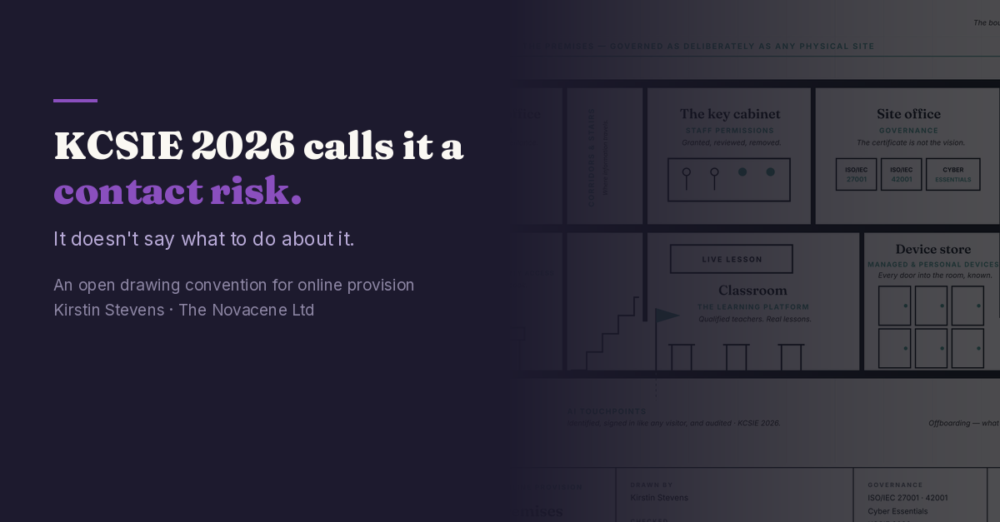
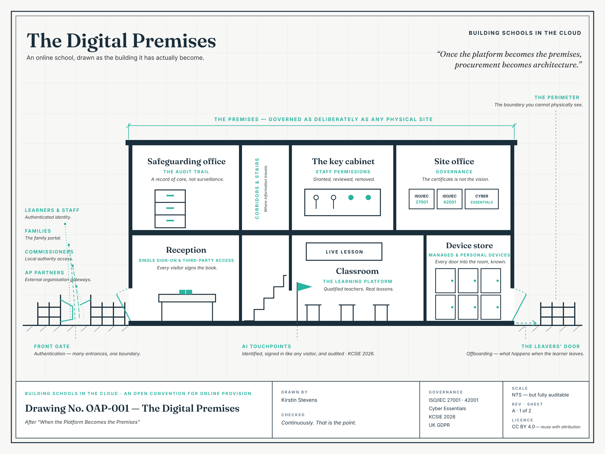

KCSIE 2026 Calls It a Contact Risk. It Doesn’t Say What to Do About It.

Keeping Children Safe in Education 2026, statutory from 1 September, places harmful interaction with generative AI within the contact risk category. Alongside grooming.
That is a significant move, and the right one. It says, in statutory language, that what happens between a child and a conversational system is a safeguarding matter rather than an IT matter. Anyone who has watched a young person talk to a chatbot at eleven at night already knew that. It is good to see it written down.
It is also, if you are a designated safeguarding lead, quite hard to act on.
Contact risk assumes someone on the other side
Every response a school already has was built around a person. Block them. Report them. Refer them. Log the incident and name the individual. The whole apparatus assumes there is somebody who can be identified and stopped.
A model is not a person. There is nobody to block. And yet the relationship is real: a system that remembers what a child told it last week, answers in language that feels patient and interested, and is easier to talk to than an adult. The harm, when it comes, does not arrive as a message from an identifiable stranger. It arrives as a slow change in what a child believes about privacy, authority and who is listening.
So the guidance names the category correctly and leaves the operational question open. What, exactly, do you do on Monday?
Most schools will answer this with procurement
Does it work? Is it affordable? Will staff use it? Can it save time?
Those are reasonable questions and they are the ones the market is set up to answer. They are also insufficient, because every one of them can be answered yes while the thing KCSIE is worried about is happening anyway. A system can be secure, lawful, well-reviewed, entirely functional, and still change a child’s understanding of what a relationship is.
The gap is not a gap in diligence. It is a gap in where the question is being asked. Procurement asks about the tool. Safeguarding needs to ask about the room the tool is standing in.
When the platform becomes the premises
I have written elsewhere about the moment this became obvious to me: our computers and our web browser are not a system behind the school. They are the school building.
Once you accept that, the vocabulary changes. Procurement becomes architecture. Permissions become keys. Authentication becomes the front gate. The audit trail becomes part of the safeguarding record. And governance stops being something you write after the technology is already in the room.
In a physical school, no serious leader would treat the position of the doors as a matter for the estates department. The architecture is not separate from the safeguarding; it creates the conditions in which safeguarding is possible at all.
So we drew it

Not as a metaphor. As a plan, on a proper sheet, with a title block and a revision table.
Reception is single sign-on. The key cabinet is staff permissions, granted, reviewed and removed. The safeguarding office is the audit trail — a record of care, not surveillance. The leavers’ door is offboarding: what happens when the learner goes. The perimeter is the boundary you cannot physically see.
The useful property of a drawing is that two people can read it at once. A security engineer looks at the plate and sees default-deny segmentation. A safeguarding lead looks at the same plate and sees a floor plan. They are now able to have a conversation about the same object, which in my experience they have almost never been able to do.
The answer to a contact risk is a non-connection
The second sheet draws the flows — which rooms talk to which, under what conditions. More importantly, it draws what is designed not to connect. We notate those as seals:
X1 — no route around the gate. There is no side door. Every entrance is the governed one.
X2 — partners never reach the record. Alternative provision partners share the learner, not the safeguarding file.
X3 — AI reads the lesson, never the file.
X3 is the architectural response to what KCSIE has just named. The AI touchpoint is admitted like any other visitor: identified, signed in, logged, audited. And it is structurally unable to reach the child’s safeguarding record — not by policy, not by staff discipline, but because the connection does not exist to be misused.
That matters for a reason worth stating plainly. If a system cannot reach the file, then a harmful interaction cannot quietly become a data breach as well. One incident stays one incident. This is the control the guidance implies and does not specify, because no general standard could: KCSIE tells a school what category the risk belongs to, not what to build.
What to do on Monday
If you take one thing from this, take these four questions. They need an afternoon, not a project.
List every point where AI touches a learner. Including the tools staff found for themselves, the ones inside platforms you already bought, and the ones a supplier switched on without telling you.
For each one, ask a single question: can it reach the safeguarding record? Not “is it likely to”. Can it.
Where it can, seal it — or write down why you chose not to. A documented decision is a governance artefact. An undocumented one is a gap waiting to be found.
Put that list in the DSL’s hands, not the IT department’s. IT can tell you what is technically true. Only safeguarding can tell you what is acceptable.
None of this requires a new platform, a consultant, or a budget line. It requires deciding that the architecture is a safeguarding question, and then asking it out loud.
Vulnerable learners reveal weak architecture
The learners most likely to be in online alternative provision are often described as a specialist group. But designing for them exposes weaknesses that affect everyone. A learner who cannot consistently enter a building makes us confront the assumption that education is the same thing as attendance. A learner moving between home, school and alternative provision reveals how fragile our institutional boundaries really are. A learner who forms a strong attachment to a chatbot reveals that the technology is not delivering content — it is participating in their experience of being known.
Vulnerability makes bad architecture visible. Which is why getting this right for the most marginalised learners produces a blueprint for everyone else. Alternative provision should not be where standards loosen because circumstances are hard. It should be where the future is tested most carefully.
Take them, redraw them, argue with them
The drawings are published openly under CC BY 4.0, with the editable sources, a crosswalk to the NCSC zero-trust design principles and NIST SP 800-207, and a companion paper for anyone who wants the full argument.
The drawings: github.com/TheNovacene/open-provision-drawings
The twelve-slide version, if you need to put this in front of a governing body or a staff meeting: KCSIE 2026 calls it a contact risk
The paper: Relational Zero-Trust: Re-erecting the Premises at the Accountability Layer — doi.org/10.5281/zenodo.21846221
Real drawings carry revision tables because drawings are contestable artefacts, and this set is issued on the same basis. Standing to revise is stated on the sheet: learners, families, staff — and anyone else prepared to argue a change. Rev B exists because reviewers challenged Rev A. The mechanism works, and I would rather it were used than admired.
If your school is working on the same problem, I would be glad to hear how you are approaching it.